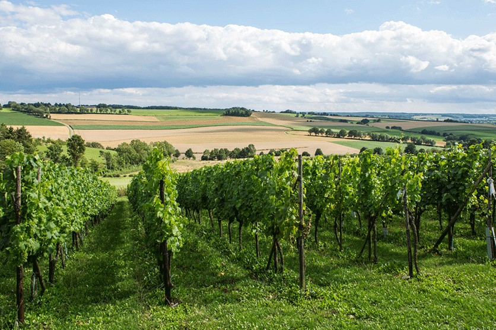
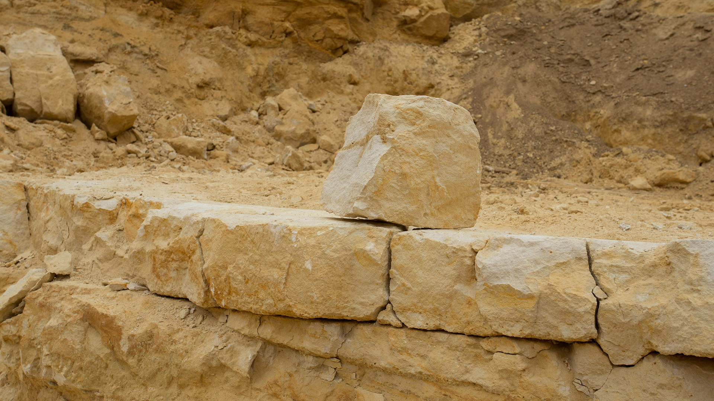

 Op de zachte glooiingen van de Fromberg in Zuid-Limburg groeien druiven. Hier staan de stokken van Wijngoed Fromberg dat zijn officiële vestiging in Ubachsberg heeft, maar deze plek is naar deze heuvel genoemd, waarvan de helling tot één van de steilste van Zuid-Limburg behoort en die optimaal naar het zuiden ligt gedraaid. Tel daarbij de goede grond, kalkzandsteen en de waarde van de plek mag duidelijk zijn. Wijngoed Fromberg behoort tot de pioniers van Nederland en beschikt over veel ervaring. Wijngoed Fromberg produceert sinds 1991 stille wijnen en bracht in 1996 de eerste mousserende wijn van Nederland uit. Kom dus snel proeven van de sfeer van het Limburgse land.
 De oorspronkelijk groeve is van 1902 tot 1970 in gebruik geweest. Door het gebruik van baksteen nam de vraag naar Kunradersteen sterk af. Ook de aanleg van de ernaast gelegen A79 zorgde ervoor dat de groeve gesloten werd. Naast de groeve was op deze locatie tevens een kalkbranderij in werking. Tegenwoordig is de vraag naar Kunradersteen weer groot, met name vanwege noodzakelijke restauratiewerkzaamheden aan de met deze steensoort gebouwde huizen en religieuze monumenten. Sinds enkele jaren is de groeve weer geopend en is er een atelier voor mergelbewerking.